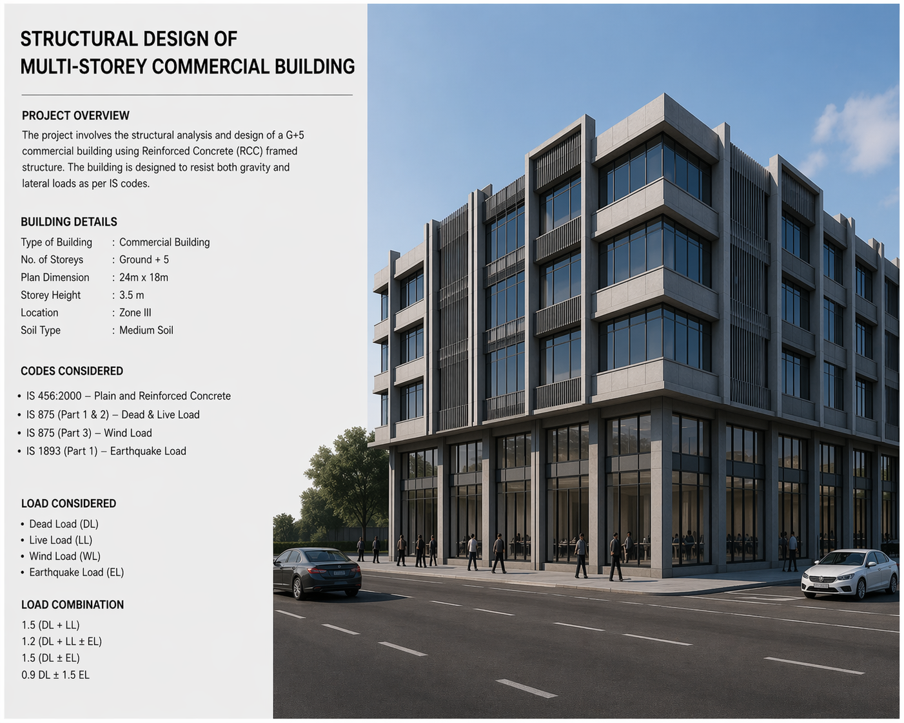
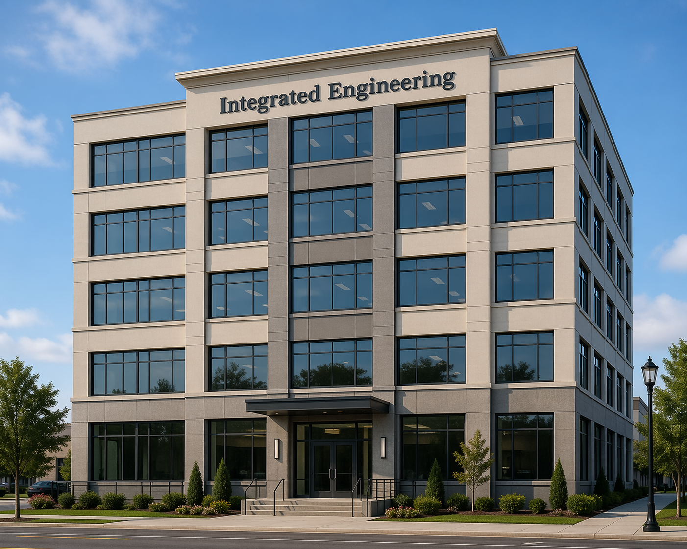

Integrated Engineering is a multidisciplinary firm delivering comprehensive solutions across mechanical, electrical, civil, and structural engineering. Built on a foundation of technical excellence and practical insight, the company serves a diverse client base ranging from private developers and industrial operators to public sector institutions. Its approach combines rigorous engineering standards with a clear understanding of project realities, ensuring designs are not only innovative but also feasible, cost-effective, and sustainable.
In mechanical and electrical engineering, Integrated Engineering provides end-to-end services that include system design, installation planning, energy optimization, and maintenance strategies. The company’s team works closely with clients to develop efficient HVAC systems, power distribution networks, and automation solutions tailored to each project’s requirements. By integrating modern technologies and energy-conscious practices, Integrated Engineering helps clients reduce operational costs while improving performance and reliability.
On the civil and structural side, the firm specializes in the planning, design, and execution of infrastructure and building projects. From roads and drainage systems to complex structural frameworks, Integrated Engineering ensures that every project meets safety standards and withstands environmental and operational demands. Its engineers employ advanced analysis tools and adhere to global best practices to deliver durable, resilient structures that stand the test of time.
What sets Integrated Engineering apart is its commitment to collaboration, quality, and continuous improvement. The company emphasizes clear communication with stakeholders, proactive problem-solving, and strict adherence to timelines and budgets. By combining multidisciplinary expertise under one roof, Integrated Engineering offers clients a seamless project experience—from concept development to completion—making it a trusted partner in delivering engineering excellence.